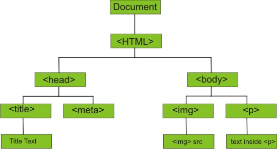

HTML vs CSS
You could imagine the difference between HTML and CSS like a song. HTML are like the lyrics, the content, written down in a single line on a piece of paper, by themselves they have no melody no cadence no rhythm. With a little bit of knowledge and skill you’ll be able to break the lyrics down into paragraphs so that the lyrics reads like it was a poem. If you then stylise your song with CSS the lyrics now have a rhythm and a melody, with backing vocals, alongside instrumentation playing chords and rhythm. I’m not meaning to disparage poems here.
Control flow and Loops
Control flow regulates how a programs code is executed. It makes sure that everything is executed in the right logical order so that the program completes its task properly. Control flow usually is made up of a bunch of conditional statements.
Loops are conditional statements where a set of instructions are run continuously in a loop until a condition is met. Take an example of the loop involved in walking somewhere. You need to walk to the supermarket, there is a condition that needs to be met; your being at the supermarket. First you have a check on the condition, look around, are you at a supermarket? If not; here are the instructions to follow;
Face the direction of a supermarket, then walk left foot forwards, then walk right foot forwards.
Once those instructions are followed check the condition, are you at the supermarket? If not repeat the instructions. When the condition is met, when it’s true, the loop stops.

Control flow controls the code at level above a loop, it will control multiple different loops and conditional statements to reach a more complex goal. Say you need to buy chocolate from the supermarket, you could start with the walking to the supermarket loop, but its no good if you get to the supermarket and then run your, do I have my wallet loop. The control flow is often made up of a main while loop; while(I don’t have chocolate); with other loops running inside that main chocolate loop.

Arrays vs Objects
Arrays and objects are two different ways of storing data. Data can be numbers (256), strings (words or sentences), Boolean values (Either True, or false) or even arrays and objects.
Arrays are ordered lists of data, say you wanted to store your shopping list:

You can store as many single food items in the list as you need. When it comes time to reading your shopping list you need to ask for each item based on its position in the list. JavaScript starts counting at zero, so the zeroth item in the shopping list (shopping list[0]) would be chocolate, cat food would be shopping list[3].
Objects in JavaScript work a bit differently, you can think of it as an unordered list, but instead of having single values of data in the list, each entry consists of a key: value pair. That is a value, like how much of something you want, 10, that is associated to a key-word, say chocolate like above. The key maps the value or data to its name.

If you wanted to have a personal shopping list and a shopping list for your grandma you could store both of them in one object. To read items out of your object it is similar to how we did it in arrays, but instead of asking for the position you ask for the key. shoppingLists[Chocolate] = 10. If we wanted to get something off of Grandmas list we would need to call shoppingLists[Grandmas][0] = Tea, with the last index the number on the array like before
Compared to arrays this can be useful because you can ask for specific things based on its key word, as opposed to blindly asking for something in the nth position.
The Dom
The DOM, short for Document Object Model is a way your web browser represents the webpage it is showing, it builds or interprets the DOM based off of the HTML and CSS source code. It essentially breaks of all the parts of the webpage into data and objects representations and then builds a tree based off of how they interact with each other.

By representing all the parts of a webpage as objects it is possible to use JavaScript to manipulate or interact with those objects. You can add JavaScript to your website so it’s included inside the DOM when it's created, or you can you a built in function on your web browser called DevTools, which give you an overview and interactive display of the DOM, and also allows you to enter in JavaScript commands to manipulate the DOM
Functions
Functions can be useful because they contain a bunch of instructions and condense them down into one name, if you ever have to write out the same repeating set of code over and over again you can set that code to a function and then call the function every time you need it. Its similar to a recipe instead of writing out every step individually in the recipe, you can condense it down into the command; make cookies, and then every time you want it to make cookies, instead of writing out the instructions again, just write the function makeCookies